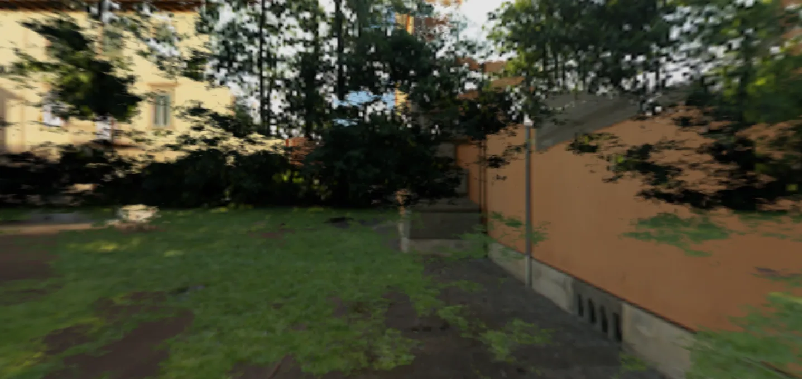

3D Lighting & Environment SkyBox & IBL SkyBox Skybox transition
transitionAlphaTexture - with NoiseTexture - RedGPU WebGPU Example
Creates smooth skybox transition effects using noise alpha textures.
노이즈 알파 텍스처를 활용해 두 스카이박스 간의 전환 효과를 연출합니다.
